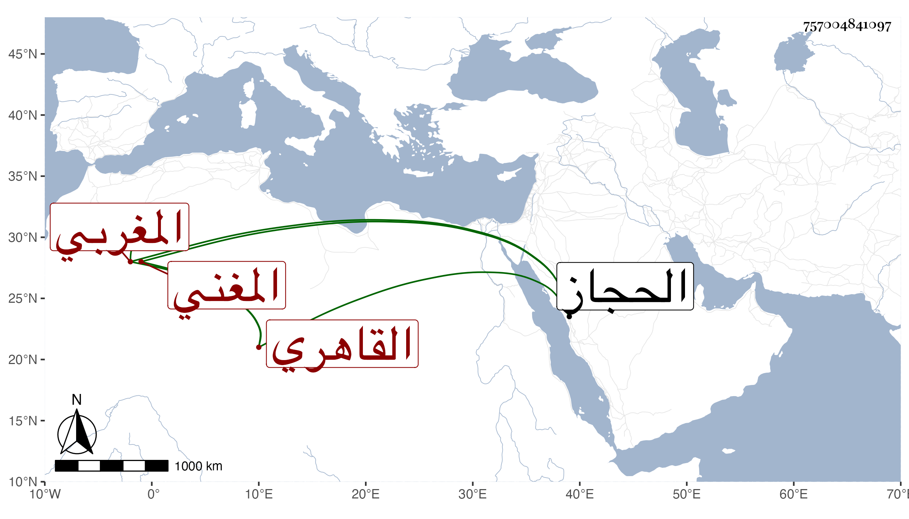

0902Sakhawi.DawLamic.ITO20230111-ara1.EIS1600.757004841097
Biography ID: 757004841097
442
محمد ناصر الدين المغربي الأصل القاهري المغني أحد الأفراد في معناه ويعرف بالمازوني . انتهت إليه رياسة إنشاد القصيد على دكة السماع والتسبيح على المياذن والإنشاد بطريق الحجاز وارتقى في ذلك إلى غاية فاق فيها ، وتنافس الرؤساء فمن دونهم في سماعه وكنت ممن سمعه ونال عزا وسمعة مع عامية وطريقة غير مرضية . مات في ليلة الجمعة ثامن جمادى الأولى سنة اثنتين وستين بعد مرض طويل بالفالج حتى كان لا يقدر على النطق فسبحان المعطي المانع ودفن من الغد وهو في عشر السبعين ولم يخلف بعده مثله سامحه الله وإيانا .
